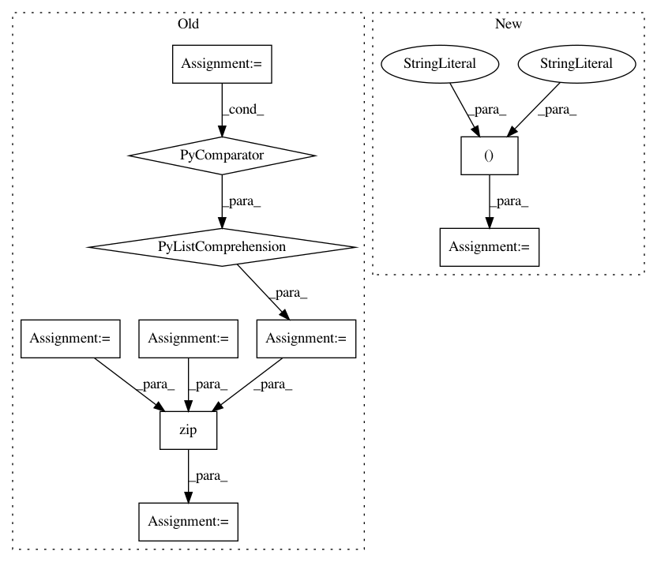

f7b4c6de2037ebedf6bc8ea5979e81666d54534f,research/object_detection/meta_architectures/center_net_meta_arch.py,,convert_strided_predictions_to_normalized_boxes,#Any#Any#Any#,992
Before Change
filter_nonoverlapping=False)
return boxes
box_lists = [box_list.BoxList(boxes) for boxes in tf.unstack(boxes, axis=0)]
true_heights, true_widths, _ = tf.unstack(true_image_shapes, axis=1)
true_heights_list = tf.unstack(true_heights, axis=0)
true_widths_list = tf.unstack(true_widths, axis=0)
box_lists = list(map(_normalize_boxlist,
zip(box_lists, true_heights_list, true_widths_list)))
boxes = tf.stack([box_list_instance.get() for
box_list_instance in box_lists], axis=0)
return boxes
After Change
// Note: We use tf ops instead of functions in box_list_ops to make this
// function compatible with dynamic batch size.
boxes = boxes * stride
true_image_shapes = tf.tile(true_image_shapes[:, tf.newaxis, :2], [1, 1, 2])
boxes = boxes / tf.cast(true_image_shapes, tf.float32)
boxes = tf.clip_by_value(boxes, 0.0, 1.0)
return boxes
In pattern: SUPERPATTERN
Frequency: 3
Non-data size: 10
Instances
Project Name: tensorflow/models
Commit Name: f7b4c6de2037ebedf6bc8ea5979e81666d54534f
Time: 2020-12-01
Author: rathodv@google.com
File Name: research/object_detection/meta_architectures/center_net_meta_arch.py
Class Name:
Method Name: convert_strided_predictions_to_normalized_boxes
Project Name: eriklindernoren/Keras-GAN
Commit Name: 6f90dac721f38b365ad87e1633860f53b9ca44db
Time: 2018-03-14
Author: eriklindernoren@gmail.com
File Name: discogan/data_loader.py
Class Name: DataLoader
Method Name: load_data
Project Name: deepfakes/faceswap
Commit Name: 343392813338ae7b10b0a3bbb3b5a9a7da6e588d
Time: 2020-08-27
Author: 36920800+torzdf@users.noreply.github.com
File Name: plugins/train/model/_base.py
Class Name: _Loss
Method Name: _set_loss_functions